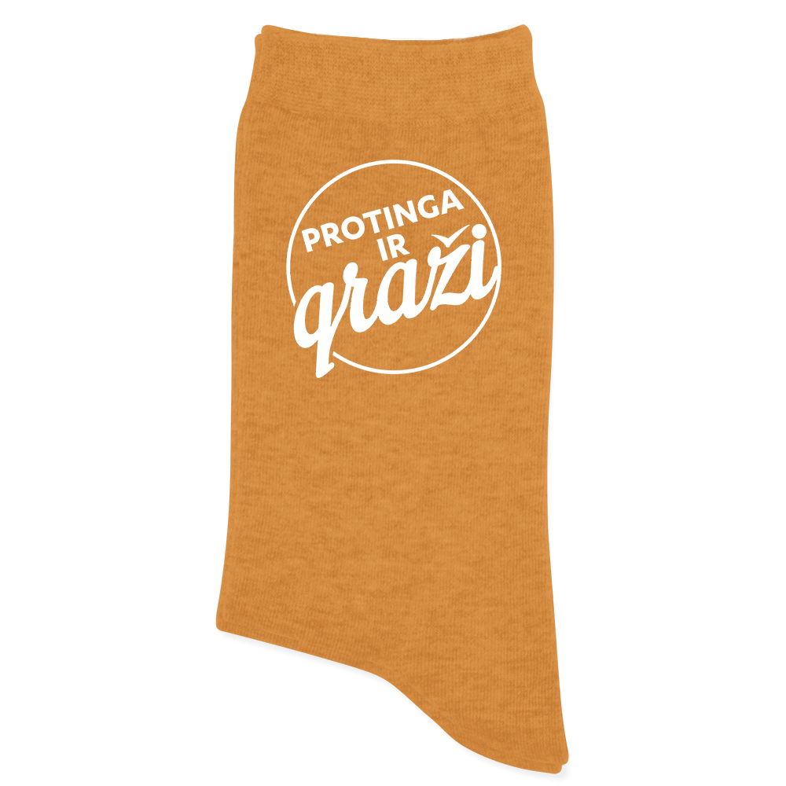

Kaip megzti kojinytes naujagimiui? – Virbalinė
- Pėdkelnės internetu | Intymi pagunda
Kokybiškos kareiviškos kojinės įvairioms oro sąlygoms. Žinomų gamintojų kojinės kariams ir civiliams, teisėsaugos ir apsaugos darbuotojams, medžiotojams ir aktyvaus laisvalaikio mėgėjams. Platus dydžių, modelių ir spalvų pasirinkimas., Puslapis 2 - Vyriškos Kojinės parduotuvė 50Style
Šis gamintojas siūlo taip pat kojines slidininkams, kurios tikrai pravers žiemos sporto entuziastams. Tuo pačiu trumpesni, labiau orui pralaidūs Nike modeliai patiks visiems bėgikams. Kojinių pasirinkimas 50 style dar niekad nebuvo toks paprastas, todėl be problemų rasi kojines savo sporto disciplinai ir, žinoma, kasdienai! - Kojinės - Spalvotos Kojinės
Kaip jau tikriausiai girdėjote, naujagimiams kojinytes patartina megzti iš 100 procentinės vilnos!!!! Ne, ne tos, kur yra švelni, kaip pavyzdžiui Alize Chashmira wool siūlų, ar siūlų skirtų mažiems vaikučiams, tokie vadinami „baby wool“. - Kojinės - Survival
Vyriškos kojinės vyrams. Kojinės sportui ir laisvalaikiui. Kojinės krepšiniui. Kojinės ir jų komplektai už itin mažas kainas. Rinkitės mūsų siūlomas kojinių pakuotes ir sutaupykite net iki 75% prekės vertės. Puiki kaina ir kokybė - pas mus suderinami dalykai. - Kojinės | ARMIJAI IR CIVILIAMS
Spalvotos kojinės – tik maža detalė garderobe, tačiau kiekviena smulkmena, pradedant manieromis, baigiant kojinėmis tampa mūsų asmenybės dalimi. Buriame savo bendruomenę kupini drąsos ir spalvingų minčių apie ateitį, tam, kad kasdien sukurtume po istoriją. - Skinija
E-parduotuvė ir ortopediniai salonai Ortotēka.Qmed, Vitea Care, Meyra, Gatapex, Omron, Tacco, Lauma, Tonus Elast, Orthoservice, Mikirad, Elbur, BODE medicinos prekės klientams Latvijoje, Lietuvoje ir Estijoje. Kainos nurodytos su PVM 12% arba 21% pagal prekės rūšį. - Kojinės vyrams - Vulcan.lt
MB Apvali prekyba. Kodas: 304975732. PVM mokėtojo kodas: LT100012084211. Dariaus ir Girėno g 40, 02189, Vilnius. Telefonas: +37065800292. - Kojinaitės | Mėlynos kojinės - Pedkelnes ir kojines ...
PĖDKELNĖS, KOJINĖS, PUSKOJINĖS internetu! Klasikinės, raštuotos, tinklinės, pėdkelnės su taškeliais. Kojinaitės, puskojinės, prilimpančios kojinės ... - Kaip megzti kojinytes naujagimiui? – Virbalinė
Platus prekių asortimentas: tinklinės, kompresinės, pėdkelnės nėščiosioms. Yra didesnių dydžių. Užsisakykite šiandien ir atsiųsime per 1-3 d.d.! - Kojinių Namai
Kokybiškos kareiviškos kojinės įvairioms oro sąlygoms. Žinomų gamintojų kojinės kariams ir civiliams, teisėsaugos ir apsaugos darbuotojams, medžiotojams ir aktyvaus laisvalaikio mėgėjams. Platus dydžių, modelių ir spalvų pasirinkimas.

Virbalinė
PRADŽIA Kontaktai Apie mane PRADŽIA Kontaktai Apie mane Kas? Kaip? Kur? Kada? , Mezginiai vaikams
Kaip megzti kojinytes naujagimiui?
/ 19 komentarųKOJINYTĖS
Taip, šiandien paruošiau jums pamokėlę, apie tai, kaip megzti kojinytes naujagimiui ar jau didesniam kūdikiui.
Kaip jau tikriausiai girdėjote, naujagimiams kojinytes patartina megzti iš 100 procentinės vilnos!!!! Ne, ne tos, kur yra švelni, kaip pavyzdžiui Alize Chashmira wool siūlų, ar siūlų skirtų mažiems vaikučiams, tokie vadinami „baby wool“. Tokiam mezginiui mes jau renkamės tą vilną, kuri turėtų graužti. Kodėl? Štai ką rašoma apie vilną:
KODĖL VILNA?
„Nuo senų senovės žmonės migdydavo kūdikius iškloję lopšį gyvūnų kailiu, dažniausiai – avikailiu. Mokslininkai pritaria, kad tai ir naudinga, ir sveika. Kailyje susidaranti „oro pagalvė“ apsaugo ploną kūdikio odą nuo perkaitimo, prakaitavimo, išdžiūvimo. Atliekant bakteriologinius avių kailių tyrimus paaiškėjo, kad juose nesiveisia mikroorganizmai (be abejo, jei avis buvo sveika). Ir šiandien gydytojai nepamiršta stebuklingų vilnos savybių. Vos gimusiems kūdikėliams patariama užmauti šiurkščios vilnos kojinaites, jos paskatins mažylio kraujotaką ir neleis sušalti mažoms kojytėms. Šaltą žiemą kūdikius taip pat patariama rengti vilnoniais rūbeliais, ypač kepurytėmis, kojinytėmis ir pirštinytėmis. Natūralios vilnos gaminiuose kūdikio odelė neprakaituos, taigi išvengsite erzinančių pašutimų ir būsite tikri, kad jūsų mažylis nesušals. Kita vertus, net ir suprakaitavus (jei vis tik neapskaičiavote, kaip parengti mažylį), vilnoniai gaminiai šildys. Jeigu nenorite rengti šiurkščių rūbų, puiki alternatyva minkšta ir plona merinosų avių vilna, dar vadinama merinosų vilna. Ji tinka net ir apatiniams rūbams, pvz., kūdikio marškinėliams siūti. Dar viena svarbi ypatybė – šie gaminiai nelinkę sukelti alergijos“ (Citata iš www.sveikaszmogus.lt )
Grynos vilnos tikrai manau galime rasti kiekvienoje siūlų parduotuvėje. Na, o jei nepavyksta rasti, tai tada jau lendam į google, o ten, galimybės beribės. Kaip sakant, vilną vežimais vežti gali :)))
Na, tai ką, pradedam?
Ko gi mums reikės norint numegzti būsimam vaikučiui tas mielas, šiltas kojinytes?
O reikia labai nedaug:
Tik 5 virbalų kojinėms, vilnonių siūlų ir truputėlio kantrybės. Bet kai mezgam tokiem mažulyčiam, tos kantrybės tikrai galime atrasti taip?
Priklausomai nuo siūlo storio apmetame pirmąsias akis ant virbalo. Mano atveju, kadangi siūlas yra ganėtinai storas, tai aš apmetu po 6 akis ant kiekvieno virbalo. Gauname išviso 24 akis. Jei ruošiatės megzti didesniam vaikučiui, galite apmesti ir 7-9 ar daugiau akių ant kiekvieno virbalo. O geriausia yra pasidaryti iš turimų siūlų mėginuką, ir pasiskaičiuoti, kiek gi mums tų akyčių reikės. Visą straipsnį apie tai kiek reikia akių galite rasti čia: https://www.virbaline.lt/mezgimas/kiek-akiu-deti/
ATVARTĖLIS
Taigi, apmetam 24 akis. Taip taip, aš tas akis apmečiau ant vieno virbalo, ne taip kaip per youtube ar knygose apie kojinių mezgimą rodo, kaip tos miklios mezgėjos sugeba tas akis apmesti iškarto ant tų keturių virbalų. Man tai misija neįmanoma. Jei taip bandyčiau, tai būtų tas pats, kaip man kas lieptų išlankstyti kokį origami. Tai atrodytų maždaug taip:
Čia kaip matote kantrybės nerasta 😉 Gerai, baigiam juokus, kimbam toliau į darbus. Taigi, apmetėm 24 akis, štai taip:
Tada paskirstome jas ant 4 virbalų. Ant kiekvieno virbalo gauname po 6 akis.
Tada pasiėmę 5 virbalą, pradedame megzti akis. Kaip suprantate, mezgimas vyks ratu. Kojinytės atvartėlį patariama megzti stulpelių raštu, nes toks raštas yra tvirtas, tamprus ir kraštelis labai gerai priglunda prie blauzdos. Kokiais stulpeliais megzti renkatės pagal savo norus. Ar (1×1, 2×2).
Kokio ilgio atvartelį norite daryti irgi palieku nuspręsti jums. Aišku būtų geriau, kad būtų išlaikytos proporcijos. Aš atvartėlį megsiu iš 18 eilių. Kad jis būtų ilgesnis ir dar galėčiau atlenkti ant kojytės.
Stulpelių raštas
Jis mezgamas taip: viena geroji akis, viena išvirkščioji, viena geroji, viena išvirkščioji ir t.t .
SVARBU!!!!! Kai mezgate ratu, stenkitės megzti taisyklingomis akimis. Mezgant gerąsias akis, virbalą kišate iš kairės pusės. Blogąsias akis mezgant, virbalą kabiname iš mezginio kitos pusės, o darbinis siūlas lieka priešais mezginį.
Gerosios akies mezgimas:
Išvirkščiosios akies mezgimas:
Kodėl? Tam, kad mezgant negautumėte persuktų akių. Nes tada yra pakankamai sunku megzti kojinę, ir mezginys atrodo ne taip jau gražiai.
Taigi, pradedame megzti nuo blogosios akies, kadangi bent jau man taip gražiau susijungia 4 ir 1 virbalai. Nuo gerosios akies pradedant, man gaunasi tarp virbalų nemenkas tarpas ir tai kojinytės pradžią daro nelabai jau patrauklią. Taigi, mezgam stulpelių raštu 1×1 (viena geroji akis, kita blogoji), kokias 18 eilių.
Kai baigiame megzti 18 eilių stulpeliais, tada pradėsime megzti čiurnos dalį, tam skiriame 10 eilių. Ir čia jau megsime vien gerosiomis akimis, t.y. lygiuoju raštu. Galima megzti ir daugiau eilių, priklauso nuo to, kokio ilgio kojinės jums reikia.
UŽKULNIS
Numezgę čiurnos 10 eilių pradėsime užkulnio mezgimą. Užkulniuką megsime gerosiomis akimis, nes taip yra lengviau pradžiamoksliams.
Taigi, 3 ir 4 virbalo akis, sukeliame ant vieno virbalo, t.y. ant virbalo bus 12 akių. Toliau jau megsime tik akis esančias ant virbalo. Taip išmegsime 10 eilių. Mezgimas vyks pirmyn atgal, t.y. lygiuoju raštu. Gerojoje pusėje gerosiomis akimis, išvirkščiojoje išvirkščiosiomis. Mezgant šias eiles, pirmoji eilės akis visą laiką nukeliama.
Mezgant šias 10 eilių, reikia atkreipti dėmesį, kad dabar mes virbalą kišame iš dešinės pusės, todėl, kad jau ratu nebemezgame. Jei megsime taip kaip mezgėme ratu, tada jau vėl gausime tas pačias persuktas akis.
Numezgę 10 eilių turime gauti štai tokį vaizdą.
KULNAS
Numezgę užkulnį, pradėsime formuoti kulną. Dabar užkulnio akis padalinsime į tris dalis: 3-6-3. Šios 6 akys bus užkulnio vidurinioji dalis. Išmezgam 3 šonines akis. Po to išmezgame 5 akis iš kulno viduriniosios dalis. Tada sumezgame į vieną akį kulno 6-ąją akį su 1 šonine akimi.
2- osios šoninės dalies 2 akys liko neišmegztos. Jas taip ir paliekame. Tada mezginį apsukame, ir jau megsime iš gerosios pusės.
2 oji eilė (geroji mezginio pusė). Pirmąją akį nukeliame. Vėl išmezgame užkulnio akis ir sumezgame 5 akį, su pirma šonine akimi.
Vėl apsukame mezginį ir sumezginėjame akis toliau taip, kaip ir mezgėme pirmąją bei antrąją eiles. Akis turime sumegzti tokiu būdu tol, kol ant virbalo lieka tik vidurinės dalies akys t.y. 6 akys.
KELTIES DALIS
Virbalu, ant kurio yra vidurinės dalies akys, iš gerosios mezginio pusės, surenkame naujas akis, t.y. iš kiekvienos užkulnio kraštinės akies, išmezgame po vieną gerąją akį. Turėtume surinkti 6 akeles.
Toliau išmezgame 1 ir 2 virbalo akis. Išmezgame akis iš kito užkulnio krašto. Lygiai tokiu pačiu būdu, kaip ir darėme rinkdami pirmąsias akeles. Turite taip pat gauti 6 akis. Ant to paties virbalo, su užkulnio surinktomis akimis išmezgame ir puse kulno akių, t.y. 3 akis.
Kaip matote mezginys vėl grįžo ant keturių virbalų. Dabar reikės pradėti po truputėlį siaurinti kojinytę. Mums reikės sumegzti akis.
1 eilė: Pradedame megzti akis nuo ketvirto virbalo. Paskutiniosios dvi akys nuo 4 virbalo išmezgamos kartu gerai iš kairės į dešinę.
Toliau išmezgame akis nuo pirmojo ir antrojo virbalo. Trečio virbalo 1 ir 2 akį apsukame ir išmezgame gerai i š dešinės į kairę.
2 eilė: Toliau vieną ratą mezgame vien gerosiomis akimis.
3 eilė: Siaurinam lygiai taip pat kaip ir pirmąją eilę.
4 eilė: Mezgam vėl vien geriosiomis akimis visą ratą.
5 eilė: Siaurinam lygiai taip pat kaip ir pirmąją eilę.
6 eilė: Vėl apmezgame visą ratą vien gerosiomis akimis.
Taip siauriname tol, kol ant virbalo vėl lieka po 6 akis, kaip ir mezginio pradžioje, kai dėjome po 6 akis ant kiekvieno virbalo.
TIESIOJI KOJINĖS DALIS:
Kai baigėme siaurinimą, pradėsime tiesiosios kojinytės dalies mezgimą. Čia kaip ir visą kojinę megsime vien gerosiomis akimis. Turime numegzti 7 eiles, iki pirštukų dalies. Jeigu mezgama kojinytė didesniam vaikučiui, tada tiesiąją dalį mezgame iki mažojo pirštuko pradžios.PIRŠTŲ DALIES MEZGIMAS
1 virbalas: pirmos dvi akys apsukamos ir išmezgamos kartu gerąja akimi.2 virbalas: Paskutiniosios dvi akys išmezgamos kartu gerąja akimi iš kairės į dešinę.
3 virbalas: pirmos dvi akys apsukamos ir išmezgamos kartu gerąja akimi.
4 virbalas: Paskutiniosios dvi akys išmezgamos kartu gerąja akimi iš kairės į dešinę.
Jei vaikiuko kojytė didesnė, tada siaurinimą darome kas antroje eilėje, kol ant virbalo lieka puse akių skaičiaus. Toliau siaurinimą jau darome kiekvienoje eilėje, kol ant virbalo lieka po vieną akį.
Kadangi, šiuo atveju mūsų kojinytė yra mezgama naujagimiui, tai sumezginėjimą dariau kiekvienoje eilėje. t.y. nemezgiau kas antros eilės. Toliau likusias 4 akeles mes galime sutraukti vąšeliu arba mezgimo adata, arba dar sumegzti nuleidžiant akis. Aš šiuo atveju viską padariau adatos pagalba, t.y. perkišau nukirpus siūlą per tas 4 akeles ir sutraukiau.
Ir viskas, jūs ką tik nusimezgėt pirmąją kojinytę.
O toliau baisioji dalis Jūs turėsite numegzti DAR VIENĄ tokią pačią kojinyte!!!! Gi visai nesunku taip? O rezultatas štai toks
Na, o jeigu dar kyla kokių neaiškumų, štai video apie kojinytės mezgimą 🙂
You May Also Like
Kur ieškoti mezgimo schemų?
2018 13 balandžioGerosios ir išvirkščios akys
2017 21 rugpjūčioMezgimas virbalais Kaip išmokti megzti?
2016 20 birželio19 komentarų
Alė
2019 19 liepos at 14:27 AtsakytiAčiū už nuostabiai aiškią pamokėlę su video, kurių dėka išmokau megzti kojinytes anūkėlei!
stase
2019 31 sausio at 13:42 Atsakytiaciu uz tai kad jusu deka mano anukele tures kojinytes mociutes megztas.labai suprantamai paaiskinta.
Rima
2018 26 rugsėjo at 10:48 AtsakytiAčiū labai aiški pamokėlė!
Vaikams
2018 11 birželio at 13:40 AtsakytiOi kaip ačiū už tokią išsamią instrukcija! Kažkaip labai norisi numegzti pačiai, nors niekad gyvenime nemezgiau, bet nėštumo metu kilo toks noras, jau merino vilnos kepuriuką turiu, gal pavyks ir kojinytės. Ko tik neišmokstame dėl savo stebukliukų 🙂
Anonimas
2017 29 spalio at 13:45 AtsakytiLabai ačiū už pamokėlę! Kojinytės puikiai pavyko 🙂
Agneta
2017 30 spalio at 19:05 AtsakytiLabai džiaugiuos, kad pavyko. Šaunu 🙂
Laima
2017 24 spalio at 19:12 AtsakytiAciu . Labai aiskiai it vaizdziai. Taip miela 🙂
Reda
2017 26 rugsėjo at 7:21 AtsakytiAčiū už aiškią pamokėlę!!!
Žalia
2017 5 sausio at 9:04 Atsakyti Sveiki. Tai kiek gramų siūlų reikėtų naujagimio kojinytėms? Ir kokio storio siūlytumėte, jei mano mažylis gims gegužę, o ne žiemą?? Gal dar brūkštelsite koks skirtumas tarp papr.vilnos ir merino vilnos?
Man kažkodėl nerodo paveiksliukų ?
Ačiū.
Mociute
2018 29 sausio at 13:04 AtsakytiGal ir aiski,bet toli gražu neteisinga užkulnis mezgamas vadinamu pusiau dvigubu mezgimu
Agneta
2018 1 vasario at 21:11 AtsakytiO kodėl neteisinga? Jeigu net 1958 metų mezgimo knygoje rašo, kad kulnas gali būti mezgamas vien tik gerosiomis akimis, o iš blogosios pusės išvirkščiosiomis. Aišku, taip pat yra paminėta, kad norint, jog kulnas būtų tvirtesnis, galima megzti ir dvigubuoju mezgimu. Todėl teigti kas knygoje parašyta dar senesniais laikais yra neteisinga.
Sia
2018 23 balandžio at 14:06 AtsakytiTaip, ypač didiesiems vaikščiotojams naujagimiams ir reikia daryti sustiprintą kulną, kad skylių nepranešiotų 🙂
Agneta
2018 23 balandžio at 21:51 AtsakytiKai jau didesni tai taip, reikia to sustiprinto kulno. O naujagimis gi nevaikšto 😉 Nors va mano vaikščiotojas sugeba pratrinti skyle net ir sustiprinto kulno, net ir su siūlais, kurie skirti kojinėms 😀
d
2016 5 gruodžio at 16:04 AtsakytiDuok Dieve Jums sveikatos. Jus toki gera darba padaret, gali visos mamytes ismokt numegzti kojinytes savo vaikuciams. Ačiū!
Mokine
2016 12 liepos at 7:16 AtsakytiKaip rašiau labai išsamios pamokeles,gal yra dar kitu budu,man keltis kažkaip plačiai atrodo,čia kalbu apie kojinaites matytas turgelyje,pas viena močiute labai plati keltis o pas kita graziai islenkta ,kodel taip yra ?
Anonimas
2016 17 liepos at 9:27 AtsakytiNaujagimiui gali kojyte sunkiau lysti kai kelti sumazini.
Agneta
2016 18 liepos at 13:09 AtsakytiAčiū už nuomonę. Na, aš savo naujagimiui mezgiau būtent tokias, tai jis kai gimė tos kojinytės buvo net per didelės, o lindo kojytė kuo puikiausiai. Tas pačias kojinytes nešiojo iki 6 mėnesiu, niekas nesmuko, kojytė laisvai tilpo, kulniukas vietoje buvo. Žinoma, galima pailginti keltį, niekas nedraudžia gi, bet man šiuo atveju nereikėjo to daryti.
Danielius Goriunovas
2016 27 birželio at 16:17 AtsakytiOho! Kaip detalu!
Išties kurį laiką pats svajojau išmokt megzti Gal reiktų pabandyt? 🙂
Agneta
2016 27 birželio at 22:38 AtsakytiOho kokie svečiai aplankė 🙂 Ačiū 🙂 Manau galėtumėt tai įrašyti į savo beprotiškų tikslų sąrašą 😀
Parašykite komentarą Atšaukti atsakymą
Susipažinkim?
Sveiki, esu Agneta, šio mezgimo tinklaraščio autorė. Man beprotiškai patinka megzti, todėl stengiuosi kasdien išmokti kažką naujo. Todėl pagalvojau, kad savo atradimais bei išmoktomis pamokomis būtinai turiu pasidalinti ir su visais.
Straipsnių kategorijos
Kažkas sau (1) Apžvalgos (3) Bandau siūlus (2) Kas? Kaip? Kur? Kada? (7) Mezginiai vaikams (2)Noriu gauti naujienas!
©2019 - All Rights Reserved. Ashe Theme by WP Royal .
Mauris vulputate dolor
Rutrum fermentum nibh in augue praesent urna congue rutrum.
Etiam posuere